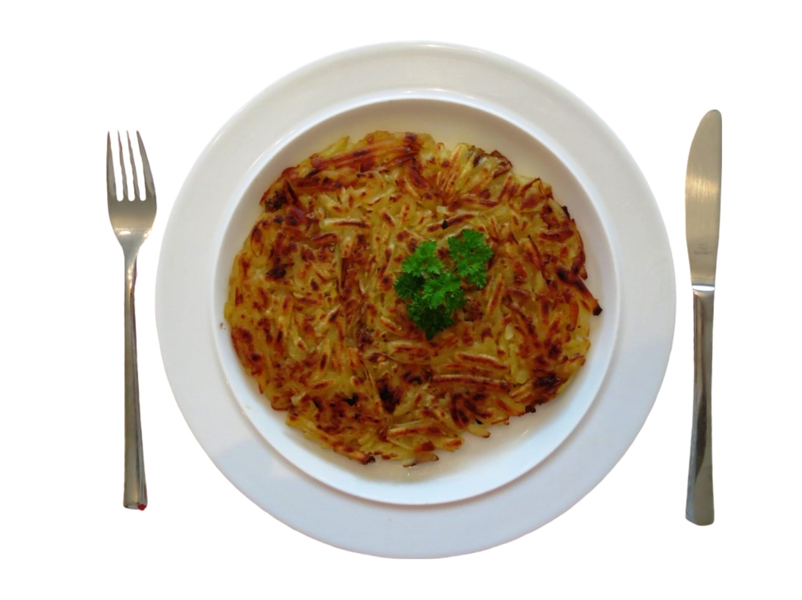

Rezepte aus der Schweiz
Zutaten:
600g bis 1kg Kartoffeln
Butter
Pfeffer
Salz oder Gewürze nach Geschmack
Zubereitung:
Wenig Bratbutter in einer beschichteten Bratpfanne heiss werden lassen.
Kartoffeln beigeben,
unter gelegentlichem Wenden ca. 5 Min. anbraten.
Rösti mithilfe einer Bratschaufel zu einem
Kuchen formen, nicht mehr bewegen.
Rösti offen bei mittlerer Hitze ca. 15 Min. weiterbraten.
Einen flachen Teller auf die Pfanne legen, Rösti auf den Teller stürzen.
Wenig Bratbutter in die Pfanne geben, Rösti zurück in die Pfanne gleiten lassen, offen ca. 15 Min.
fertig braten.
Videoanleitung:
Zurück zur Startseite